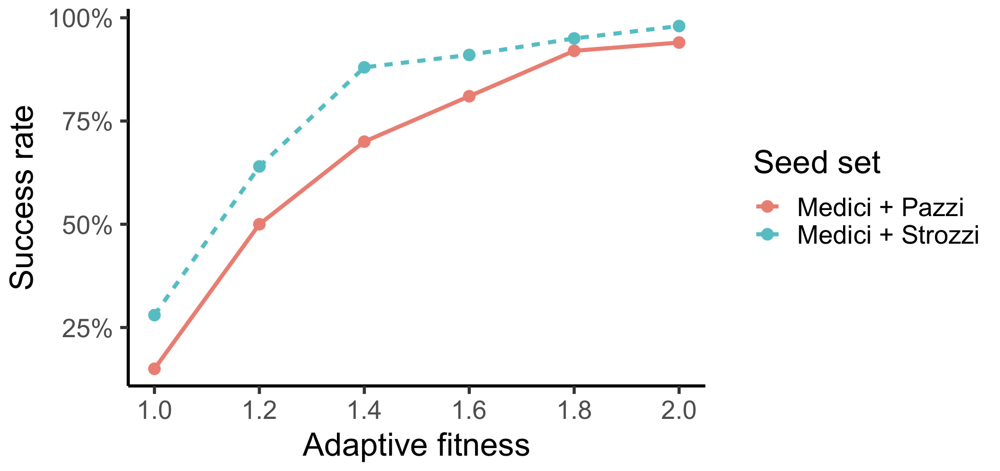

Diffusion in Florentine Networks
Overview
This vignette demonstrates how to simulate the diffusion of adaptive behavior across a historical network of Florentine noble families. We’ll use the socmod package to:
- Load and process the Florentine marriage network,
- Define a seeding strategy with different families,
- Run trials across a range of adaptive fitness values,
- Plot the success rates of adoption.
Load packages
Helper functions
Here we define three helper functions that use igraph and the netrankr package to load and prepare the Florentine network for use in socmod. Specifically these functions (1) load Florentine network data; (2) create a socmod::AgentBasedModel representation of the sysetm; and (3) visualize the success rate across adaptive fitness values.
Load network data
load_florentine_marriage_network <- function() {
if (!requireNamespace("netrankr", quietly = TRUE)) {
stop("Please install the 'netrankr' package to access the Florentine families network.")
}
data("florentine_m", package = "netrankr", envir = environment())
graph <- igraph::delete_vertices(florentine_m, which(degree(florentine_m) == 0))
return(graph)
}Model factory
make_florentine_seed_model <- function(seed_families = c("Medici"),
adaptive_fitness = 1.2,
legacy_fitness = 1,
graph = NULL) {
if (is.null(graph)) {
graph <- load_florentine_marriage_network()
}
nodes <- igraph::V(graph)$name
agents <- purrr::map(nodes, function(family) {
behavior <- if (family %in% seed_families) "Adaptive" else "Legacy"
fitness <- if (behavior == "Adaptive") adaptive_fitness else legacy_fitness
Agent$new(id = family, name = family, behavior = behavior, fitness = fitness)
})
AgentBasedModel$new(agents = agents, graph = graph)
}
run_florentine_seed_model <- function(adaptive_fitnesses =
c(1.0, 1.5),
n_trials = 10,
seed_sets = list(
`Medici + Pazzi` = c("Medici", "Pazzi"),
`Medici + Strozzi` = c("Medici", "Strozzi")
),
legacy_fitness = 1) {
trials <- purrr::map2(
names(seed_sets), seed_sets,
\(label, seeds) {
purrr::map(adaptive_fitnesses, \(f_A) {
run_trials(
n_trials,
\() make_florentine_seed_model(seeds, f_A, legacy_fitness),
label = label,
metadata = list(seed_set = label, adaptive_fitness = f_A),
stop = fixated
)
}) |> flatten()
}
) |> flatten()
summarise_by_metadata(trials, fields = c("adaptive_fitness", "seed_set"))
}Visualization
plot_florentine_seed_analysis <- function(adaptive_fitnesses, summary_by_fitness) {
ggplot(summary_by_fitness, aes(x = adaptive_fitness, y = success_rate,
color = seed_set, linetype = seed_set)) +
geom_line(linewidth = 1.2) +
geom_point(size = 2) +
labs(x = "Adaptive fitness", y = "Success rate") +
scale_x_continuous(breaks = adaptive_fitnesses) +
scale_y_continuous(labels = scales::percent_format(accuracy = 1)) +
theme_classic(base_size = 14)
}Run the simulations and plot success rate
With these helpers defined, it is easy to run the model for our desired number of trials for each seeding option and adaptive fitness value. The outcome variable we calculate is the success rate, or the fraction of simulation trials that ended in fixation of the Adaptive behavior, in this case solar panel adoption.
adaptive_fitnesses <- c(1.0, 1.2, 1.4, 1.6, 1.8, 2.0)
summary_by_fitness <- run_florentine_seed_model(
adaptive_fitnesses, n_trials = 100
)
plot_florentine_seed_analysis(
adaptive_fitnesses, summary_by_fitness
)
So it appears that Strozzi is probably the safer business partner if we only consider this structural effect. In the real world, of course, many other factors could lead Pazzi to be selected instead, such as business acumen, general likeability, a better relationship with the Medici, and so on.